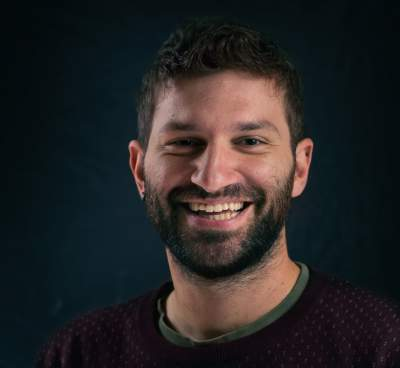

Guillermo Fandos
Spatial Ecologist & Conservation Scientist
I am a spatial ecologist interested in why animals move, how we can monitor biodiversity, and how species respond to global change. My work sits at the crossroads of fieldwork, large-scale data synthesis, and quantitative modelling — from ringing birds across Europe to building predictive tools for threatened species.
I work as Assistant Professor at Universidad Complutense de Madrid, where I combine research with teaching. Always happy to hear from potential collaborators and students.
Research Questions
Where do animals go — and why?
We study how individuals move across landscapes, from daily foraging to lifetime dispersal. Why do two birds of the same species behave so differently? Understanding this helps predict range shifts under global change.
Can we forecast biodiversity?
Combining citizen science, standardised surveys, and hierarchical models to monitor and model species distributions at large scales — and anticipate what comes next.
How do we translate science into action?
From large carnivore management to habitat connectivity, we work to make ecological models useful for real conservation decisions.
Projects
PI · 2024–2026
INTRADISP
Why do individuals of the same species disperse so differently? Synthesising European bird ringing data to find out.
UCM
Team member · 2024–2027
RIMed-Fauna
How does wildlife cope with the extreme seasonality of Mediterranean rivers? Camera trapping and SDMs in National Parks.
Red de Parques Nacionales
PI · 2022–2023
INCISE
Integrating citizen science and standardised survey data to improve estimates of species distributions and population trends.
H2020-MSCA-COFUND · UNA4CAREER
Past projects & applied contracts
News
- Feb 2026 — New paper in Communications Biology: Dispersal syndromes across the tree of life (Fandos et al. 2026)
- Feb 2026 — In Vienna for the EUFLYNET COST Action meeting on bird migration research
- 2025 — Welcome to David Notario and Claudia Mediavilla joining as researchers
Get in touch
I’m always open to new collaborations, especially if you’re interested in dispersal ecology, species distribution modelling, or conservation applications. If you’re a student looking for a thesis project, don’t hesitate to write.
Guillermo Fandos Dept. Biodiversidad, Ecologia y Evolucion Universidad Complutense de Madrid C/ Jose Antonio Novais 12, 28040 Madrid